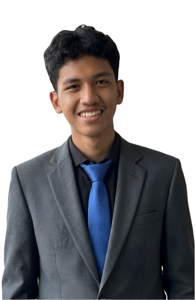

Portofolio



Siswa jurusan Desain Komunikasi Visual (DKV) di SMAN 5 Kota Bekasi. Saya memiliki minat dalam bidang desain grafis, editing konten, dan media sosial. Saya senang menciptakan desain yang menarik, kreatif, dan sesuai dengan kebutuhan pelanggan.